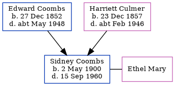

Sidney John Coombs 1900 - 1960
[ Home ] | [ Calendar ] | [ Surnames Index ] | [ Errors ] | [ Family History ]A railway signalman and the child of Edward Coombs (an agricultural labourer) and Harriett Culmer, Sidney Coombs, the second cousin twice-removed on the mother's side of Nigel Horne, was born in Hernhill, Kent, England on 2 May 19001,2,3 and baptised there at St Michael on 15 Jul 1900. He was married to Ethel Mary.
During his life, he was living at Red Lion Inn in Hernhill on 31 Mar 19015; on Crockham Lane in Hernhill on 2 Apr 19114; and at 11 Napleton Road, Faversham, Kent, England on 29 Sept 19391.
He died on 15 Sept 1960 in Sittingbourne, Kent, England3.
Parents
- Edward was born on 27 Dec 1852
- Harriett was born on 23 Dec 1857
Citations
- 1939 Register - Findmypast (was the head of the household)
- England & Wales births 1837-2006 - Findmypast
- England & Wales deaths 1837-2007 - Findmypast
- 1911 Census for England & Wales - Findmypast (was age 10 and the son of the head of the household)
- 1901 England, Wales & Scotland Census - Findmypast (was age 0 and the son of the head of the household)
Media
1901 England, Wales & Scotland Census - GBC/1901/0004885729
England & Wales births 1837-2006 - BMD/B/1900/2/AZ/000127/233
1939 Register - TNA/R39/1715/1715G/011/39
England Births & Baptisms 1538-1975 - R_884946940
Kent Baptisms - GBPRS/CANT/B/96335059
Family Tree
Map
Generated by ged2site. Last updated on Jul 3, 2024